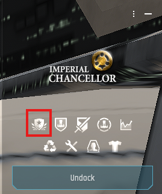
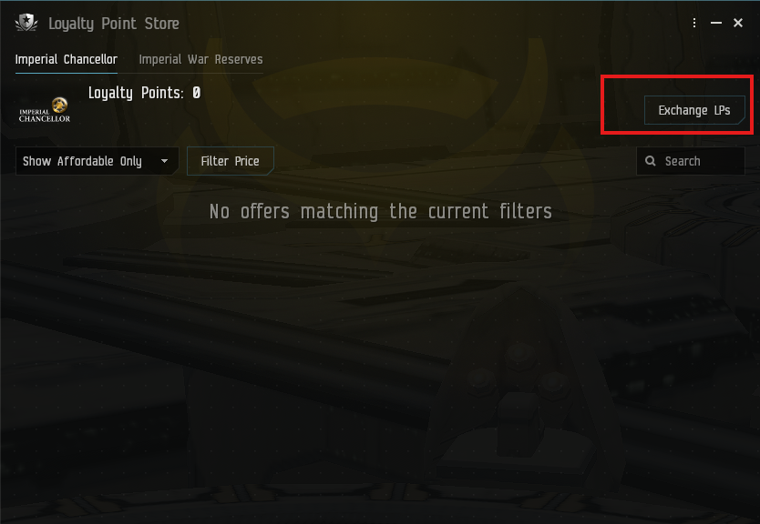
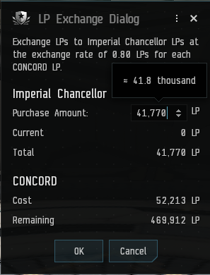
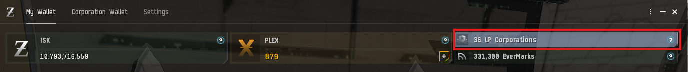
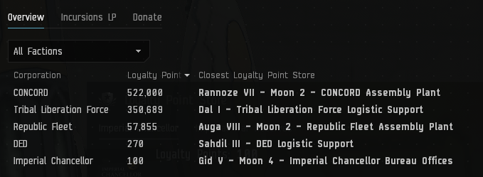
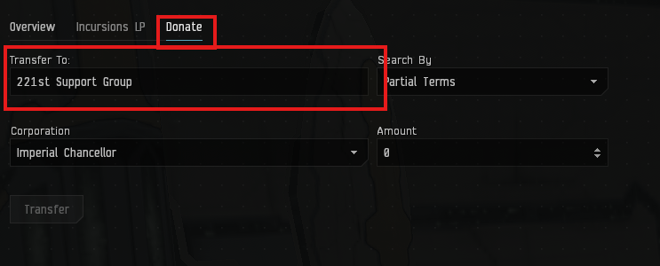
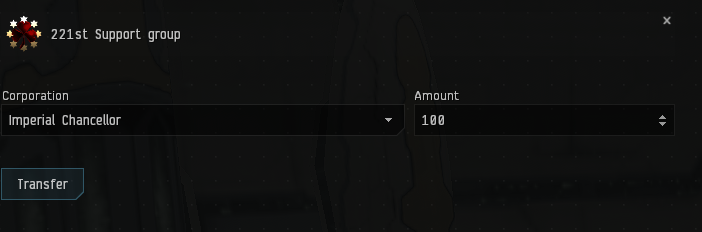
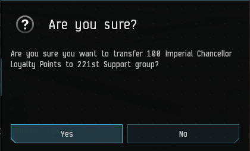
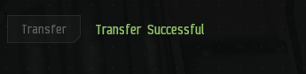

LP Conversion
How to turn CONCORD LP into another corporation’s LP at a station LP store, then transfer it to a corporation from your wallet.
1. Convert CONCORD LP
-
Open the Loyalty Point Store
Dock at a station belonging to the corporation whose LP you want (here, Imperial Chancellor). In the station services panel, click the Loyalty Point Store icon.

-
Click “Exchange LPs”
The store opens on the station owner’s tab. Click Exchange LPs at the top right.

-
Choose an amount and confirm
The LP Exchange Dialog shows the exchange rate (in this example, 0.80 Imperial Chancellor LP for each CONCORD LP). Enter the Purchase Amount you want to receive.
Under CONCORD, Cost is how much CONCORD LP will be spent and Remaining is what’s left afterwards. Click OK to exchange.



2. Check your LP balances
-
Open the LP section of your wallet
Open your Wallet (My Wallet tab) and click the LP Corporations tile.

-
Find the corporation
The Overview tab lists every corporation you hold LP with, your balance, and the closest LP store for each. Your newly converted LP should appear here.



3. Donate LP to a corporation
-
Pick who to transfer to
Switch to the Donate tab. In Transfer To, type the recipient’s name (for example, 221st Support Group) and select it from the results.

-
Choose the LP and amount
Select the Corporation whose LP you’re sending (the one you just converted into), enter the Amount, then click Transfer.

-
Confirm the transfer
Double-check the amount, LP corporation and recipient in the prompt, then click Yes.

-
Done
“Transfer Successful” appears next to the button once the LP has been sent.
